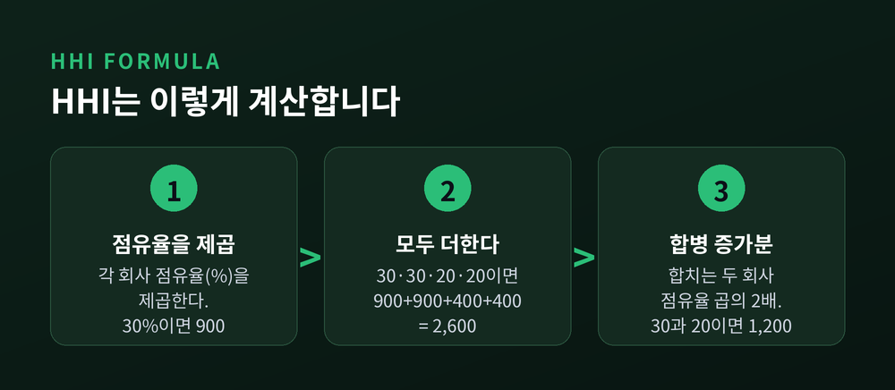
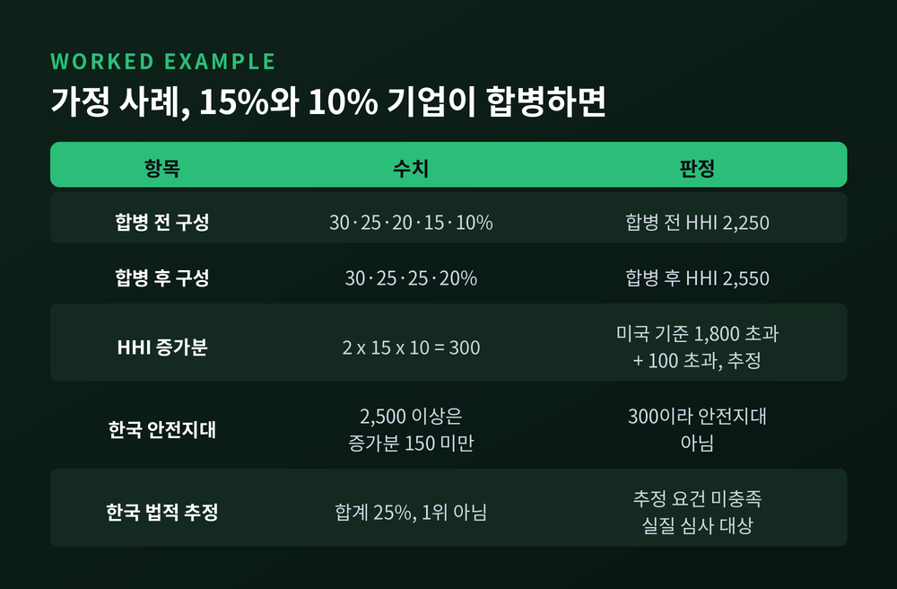
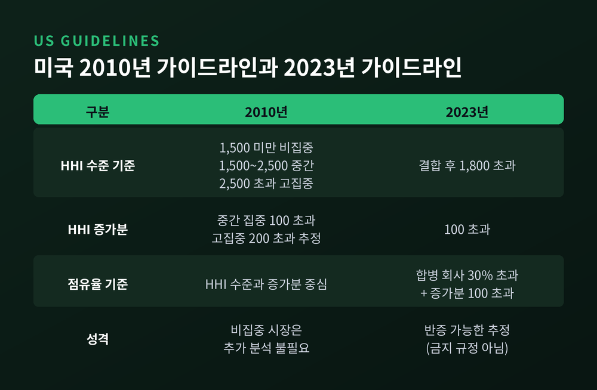
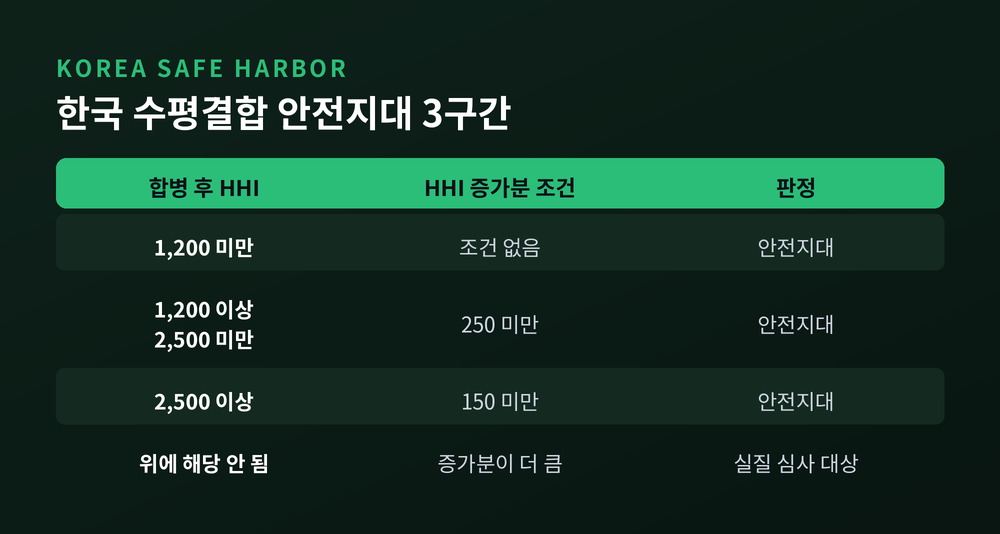
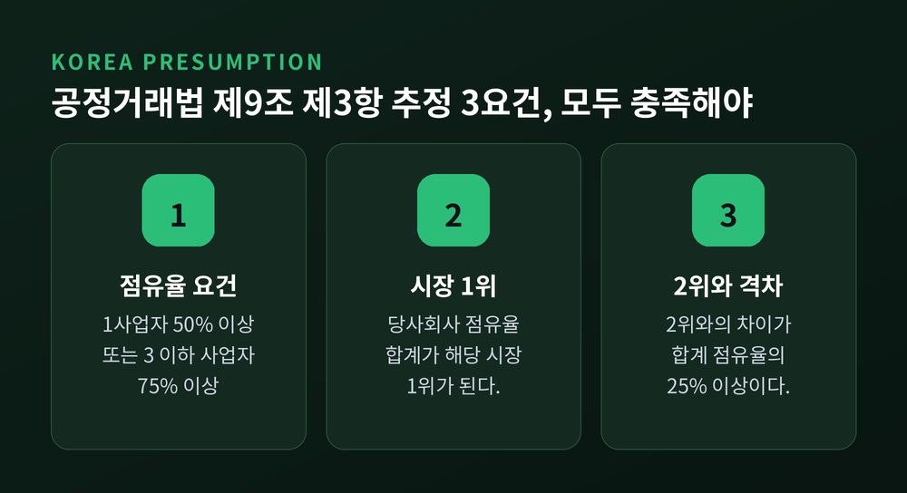
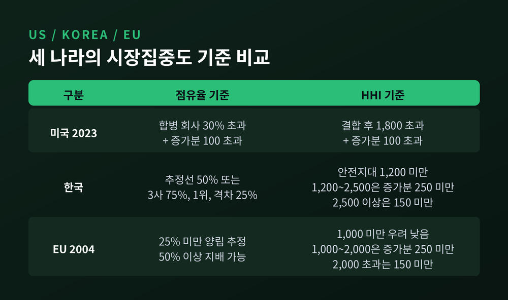

이번 글에서는 시장집중도 HHI와 기업결합 심사 기준을 정리해 보겠습니다.
두 회사가 합칠 때 경쟁당국이 어느 숫자부터 눈여겨보는지, 미국과 한국, EU의 기준을 나란히 놓고 살펴봅니다.
결론부터 말씀드리면 미국은 결합 후 HHI 1,800 초과 또는 점유율 30% 초과, 한국은 HHI 1,200 미만이 안전지대이고 법상 추정선은 점유율 50%입니다.
HHI는 허핀달-허쉬만 지수의 약자입니다. 시장에 있는 모든 사업자의 점유율(%)을 각각 제곱한 뒤 전부 더하면 됩니다.
기업이 잘게 흩어져 있으면 값이 작고, 한두 곳이 점유율을 쥐고 있으면 값이 커집니다. 한 회사가 시장을 독차지하면 100의 제곱, 곧 10,000이 됩니다.
미국 법무부의 2023년 합병 가이드라인이 든 예가 이해하기 좋습니다. 점유율 20%인 회사 다섯 곳이 있는 시장은 5 x 20² = 2,000입니다. 여섯 곳이면 약 1,667입니다.
2010년 가이드라인에는 30%, 30%, 20%, 20%인 네 회사의 HHI가 900+900+400+400으로 2,600이라는 계산이 나옵니다.

점유율 합계는 같아도 제곱을 하기 때문에 큰 회사의 비중이 훨씬 크게 반영됩니다. 상위 3사 점유율을 단순히 더하는 방식(집중률)과 다른 점입니다.
한국도 2007년 심사기준을 개정하면서 이 지수를 도입했고, 기존의 상위업체 점유율 기준을 대신하게 되었다고 보도되었습니다.
기업결합 심사에서 정말 중요한 숫자는 합병 뒤의 수준만이 아닙니다. 합병으로 HHI가 얼마나 뛰었는지, 즉 증가분이 함께 쓰입니다.
계산은 간단합니다. 합치는 두 회사의 점유율을 곱해 2배 하면 됩니다. 2010년 가이드라인은 30%와 20% 회사가 합치면 30 x 20 x 2 = 1,200만큼 오른다고 설명합니다.
가정 사례를 하나 만들어 보겠습니다. 점유율이 30·25·20·15·10%인 다섯 회사가 있는 시장입니다.
합병 전 HHI는 900+625+400+225+100으로 2,250입니다. 점유율 15%와 10%인 두 회사가 합치면 증가분은 2 x 15 x 10 = 300이고, 합병 뒤 HHI는 2,550입니다.

이 가정 사례를 각국 기준에 견주어 보면 결과가 갈립니다.
미국 2023년 기준으로는 결합 후 HHI가 1,800을 넘고 증가분이 100을 넘으므로 경쟁 저해가 추정됩니다. 한국은 HHI 2,500 이상일 때 증가분 150 미만이어야 안전지대인데 300이므로 여기서는 빠집니다.
다만 합친 점유율이 25%로 시장 1위가 아니어서, 한국 법이 정한 경쟁제한성 추정 요건에는 해당하지 않습니다. 이 경우는 안전지대도 아니고 추정도 아닌 중간 구간이어서, 실질 심사로 넘어가게 됩니다.
미국 법무부와 연방거래위원회가 2023년 12월 18일 발표한 합병 가이드라인의 Guideline 1은 두 가지 경우에 경쟁 저해를 추정합니다.
하나는 결합 후 HHI가 1,800을 넘으면서 증가분이 100을 넘는 경우입니다. 다른 하나는 합병 회사의 점유율이 30%를 넘으면서 증가분이 100을 넘는 경우입니다.
예전엔 기준이 더 높았습니다. 2010년 가이드라인은 HHI 1,500 미만을 비집중, 1,500~2,500을 중간 집중, 2,500 초과를 고집중 시장으로 구분했습니다. 고집중 시장에서 증가분 200 초과면 시장지배력 강화를 추정했습니다.
지금은 1,800과 100입니다. 2023년 가이드라인은 각주에서 "원래의 기준으로 복귀했다"고 밝혔고, 1,800은 2010년 이전 수준입니다. 컨설팅사 CRA는 이 변화로 추정 대상 거래가 상당히 늘어날 것이라고 분석했습니다.

30%라는 숫자는 1963년 연방대법원의 필라델피아 내셔널 뱅크 판결에서 왔습니다. 합병 뒤 점유율이 약 30%가 되고 상위 2개 은행의 집중도가 44%에서 59%로 오르는 사건이었습니다.
법원은 과도한 점유율을 가진 기업이 생기고 집중도가 크게 오르는 합병은, 반대 증거가 없는 한 막아야 한다고 판단했습니다.
여기서 짚을 점이 있습니다. 이 기준은 금지 규정이 아니라 반증 가능한 추정입니다. 당사자는 경쟁 저해가 없다는 증거를 낼 수 있습니다.
정권이 바뀐 뒤에도 흐름은 이어졌습니다. 2025년 2월 FTC 위원장은 안정성과 예측 가능성을 이유로 2023년 가이드라인을 계속 적용하라고 지시했습니다.
한국 공정위의 심사는 두 갈래입니다. 하나는 HHI로 그은 안전지대, 다른 하나는 공정거래법 제9조 제3항의 경쟁제한성 추정입니다.
안전지대는 세 구간입니다. HHI 1,200 미만이면 우려가 없다고 봅니다. 1,200 이상 2,500 미만이면 증가분이 250 미만일 때, 2,500 이상이면 증가분이 150 미만일 때 안전지대입니다.

법적 추정은 요건이 더 까다롭습니다. 아래 세 가지를 모두 갖춰야 합니다.
첫째, 당사회사의 시장점유율이 1사업자 50% 이상 또는 3 이하 사업자 75% 이상이라는 기준에 해당해야 합니다. 둘째, 당사회사 점유율 합계가 해당 시장에서 1위여야 합니다. 셋째, 합계와 2위 회사의 점유율 차이가 합계의 25% 이상이어야 합니다.
점유율이 높다는 것만으로는 부족하고, 2위와 얼마나 벌어졌는지까지 본다는 뜻입니다.

비수평결합(수직·혼합)은 기준이 다릅니다. HHI 2,500 미만이면서 당사회사 점유율이 25% 미만이거나 각 시장에서 4위 이하일 때 안전지대로 봅니다. 2022년 12월 30일 시행된 개정으로 각 시장 점유율이 10% 미만이면 집중도와 무관하게 안전지대에 들어갑니다.
신고 대상은 한쪽의 자산총액 또는 매출액이 3,000억 원 이상, 상대방이 300억 원 이상인 결합입니다. 심사 기간은 30일이고, 연장하면 최대 90일을 더할 수 있습니다.
EU의 2004년 지침은 점유율 25% 미만이면 시장과 양립한다고 추정하고, 50% 이상이면 그 자체로 지배적 지위를 시사할 수 있다고 봅니다. HHI는 1,000 미만이면 우려가 낮고, 1,000~2,000에서는 증가분 250 미만, 2,000 초과에서는 150 미만일 때 안전항으로 취급합니다.
2026년 4월 30일에는 개정 초안이 공개되었습니다. 의견 수렴은 6월 26일에 끝났고, 최종 채택은 2026년 4분기를 목표로 합니다. 초안에는 결합 점유율 25% 미만, HHI 1,000 미만 등 네 가지 안전항이 담겼습니다. 아직 초안이므로 확정된 기준으로 단정하기는 어렵습니다.

세 나라의 숫자는 조금씩 다릅니다. 같은 합병이라도 어느 법정에서 보느냐에 따라 출발선이 달라지는 셈입니다.
숫자가 넘었다고 합병이 곧바로 막히는 것은 아닙니다. 2022년 2월 22일 공정위는 대한항공의 아시아나항공 지분 63.88% 인수를 조건부 승인했습니다.
경쟁 제한 우려 노선은 국제선 26개와 국내선 14개를 합쳐 40개였습니다. 공정위는 10년 동안 해당 노선의 슬롯과 운수권을 이전하게 하고, 운임 상한과 좌석 공급 축소 금지, 서비스 품질 유지, 마일리지 불리한 변경 금지를 함께 요구했습니다.
거부와 승인의 이분법이 아니라, 문제 노선만 골라 구조와 행태를 손보는 방식입니다.
HHI는 계산이 쉽고 기준이 분명하다는 장점이 있습니다. 그러나 완벽한 잣대는 아닙니다.
이 숫자는 시장을 어떻게 획정하느냐에 따라 달라집니다. 시장을 좁게 잡으면 점유율이 커지고 HHI도 올라갑니다.
학계의 논쟁도 있습니다. 2022년 미국경제학회지(AER)에 실린 노케와 윈스턴의 연구는 합병이 소비자에게 해로운지가 합병 후 HHI의 수준보다 증가분과 더 강하게 맞물린다고 보았습니다. 다만 이 분석은 단독효과 모형이어서, 공동행위나 신규 진입은 담지 못한다는 한계를 스스로 밝혔습니다.
EU 초안도 구조 지표가 결정적이지는 않다고 적었습니다. 혁신 시장처럼 점유율이 빨리 바뀌는 곳에서는 숫자가 낮아도 우려가 생길 수 있습니다.
정리하면 이렇습니다.
점유율 몇 %부터라는 질문에는 하나의 답이 없습니다. 미국은 30%와 HHI 1,800, 한국은 50%·75%와 1,200~2,500의 안전지대, EU는 25% 미만을 기준선으로 삼습니다.
그러나 어느 나라든 숫자는 출발점일 뿐이고, 마지막 판단은 경쟁 압력과 진입 가능성, 소비자 영향을 따져 내려집니다.
"기준선은 문을 여는 열쇠일 뿐, 판결문은 아니다."
뉴스에서 합병 소식을 접하신다면 이제는 합친 점유율과 함께, 2위와의 격차와 HHI 증가분이 어떻게 되는지부터 계산해 보시길 권합니다.